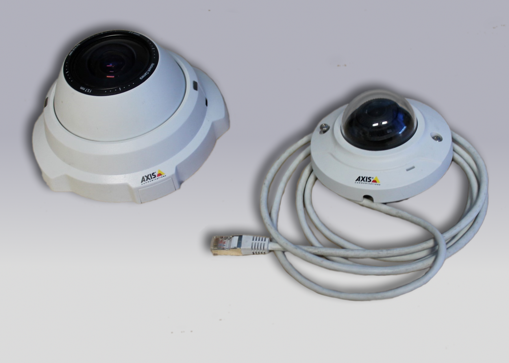
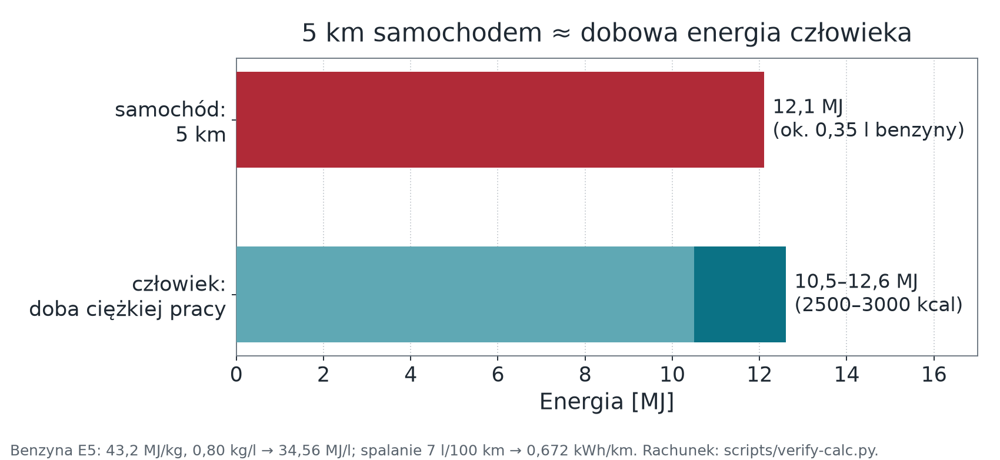

Wykład 7 — jak system sam zauważa, że coś przestało działać
Wydział Inżynierii Środowiska i Inżynierii Mechanicznej
Uniwersytet Przyrodniczy w Poznaniu
Pytanie modułu: skąd system wie, że urządzenie zamilkło — i co się wtedy dzieje?
Fot. NASA Goddard, domena publiczna
Wracamy do wykładu 0
Harari: rewolucje w biotechnologii i infotechnologii przeprowadzają inżynierowie, przedsiębiorcy i naukowcy, nieświadomi politycznych konsekwencji swoich decyzji. Po siedmiu modułach to zdanie dotyczy już nas.
Y. N. Harari, 21 lekcji na XXI wiek (2018)
Dlaczego to jest w module o eksploatacji
Etyka nie jest tu dygresją ani zakończeniem. Umieszczamy ją przy eksploatacji, bo wszystkie jej konsekwencje ujawniają się po wdrożeniu: w retencji danych, w zakresie uprawnień, w tym, co zostaje po wyłączeniu systemu.
Projekt, który nie odpowiada na pytanie „jak to wyłączyć, nie niszcząc zapisów”, nie jest skończony.
Fot. Jrmlhermitte, CC BY-SA 4.0
Usługa stanu urządzenia utrzymuje zestaw atrybutów serwerowych:
| Pole | Typ | Znaczenie |
|---|---|---|
active |
logiczny | na tym polu budujemy alarm |
lastConnectTime |
ms od epoki | ostatnie zestawienie sesji |
lastDisconnectTime |
ms od epoki | ostatnie zamknięcie sesji |
lastActivityTime |
ms od epoki | ostatnia telemetria, atrybut lub RPC |
inactivityAlarmTime |
ms od epoki | ostatnie zdarzenie nieaktywności |
DEFAULT_INACTIVITY_TIMEOUT); platforma sprawdza urządzenia co 60 s (DEFAULT_STATE_CHECK_INTERVAL).inactivityTimeout w milisekundach — do szybkiego laboratorium wystarcza 60000.Connect, Disconnect, Activity, Inactivity.Aktywność jest raportowana do usługi stanu wsadowo. Domyślna strategia LAST zgłasza tylko ostatnią aktywność z okresu o długości TB_TRANSPORT_SESSIONS_REPORT_TIMEOUT — domyślnie 3000 ms.
Jeżeli próg nieaktywności nie jest dłuższy od okresu raportowania, urządzenie publikujące co sekundę zostanie błędnie uznane za nieaktywne.
Zasada doboru progu
Próg nieaktywności dłuższy niż okres raportowania aktywności — z zapasem na realne przerwy między komunikatami.
Dla ustawień domyślnych: więcej niż 3 s, praktycznie 60 s (dwudziestokrotny zapas).
Drugi parametr, o którym się zapomina
TB_TRANSPORT_SESSIONS_INACTIVITY_TIMEOUT (domyślnie 300 000 ms) to osobny parametr — timeout sesji transportowej.
Dokumentacja zaleca, by nie był krótszy od progu nieaktywności urządzenia — a wartości domyślne same tę zasadę łamią (300 s < 600 s). Przy niezgodności zdarzenia sesji i aktywności rozjeżdżają się, a diagnoza idzie w złą stronę: szukamy problemu w sieci, choć przyczyną jest konfiguracja.
Fałszywy alarm jest gorszy niż brak alarmu, bo uczy operatora ignorowania powiadomień.
Dwa wymagania, które łatwo pominąć
Dowód, nie deklaracja
Alarm, który nigdy się nie zamknął, wygląda w historii tak samo jak awaria trwająca do dziś. Test zamknięcia alarmu jest częścią odbioru — nie opcją.
Fot. Lacz02, CC BY-SA 4.0
| Powierzchnia | Zagrożenie | Minimalny środek w pilocie |
|---|---|---|
| Urządzenie | dostęp fizyczny, odczyt pamięci, wgranie obcego firmware | unikalne poświadczenia, podpisany obraz, anti-rollback |
| Łącze | podsłuch, podszycie się, powtórzenie komunikatu | TLS, weryfikacja certyfikatu serwera, identyfikator żądania |
| Broker / brzeg | publikacja w cudzym temacie, zalanie ruchem | ACL per urządzenie, limity, log odrzuceń |
| Platforma / dane | nadmiar uprawnień, wyciek tokenów, nadmierna retencja | role, rotacja tokenów, jawny TTL danych |
Każdy z tych środków pojawił się już wcześniej — anti-rollback w module 03, identyfikator żądania w 04, ACL w 04, log odrzuceń w 05, role i TTL w 06. Ten slajd nie dokłada nowych mechanizmów; porządkuje istniejące według tego, przed czym chronią.
To dwa osobne incydenty:
Wrzesień–październik 2016 — Mirai: kamery, rejestratory DVR i routery z fabrycznymi hasłami. Atak na blog Krebsa (~620 Gb/s), OVH (~1 Tb/s), a 21 października na operatora DNS Dyn.
Listopad 2016 — wariant Mirai atakujący interfejs zarządzania TR-064/TR-069 (port 7547), bez łamania haseł. Routery Deutsche Telekom zawieszały się przy próbach infekcji — ok. 900 tys. klientów bez łączności.

Zdjęcie poglądowe (kamery Axis); Mirai atakował głównie tanie kamery i DVR innych producentów. Fot. Bungle, CC BY-SA 4.0.
Mechanizmy, które zadziałały
Różnica wobec ataku na serwer WWW
W IoT atakujący może przejąć kontrolę nad fizycznymi zaworami i przekaźnikami albo zafałszować krytyczne odczyty środowiskowe. Skutek nie kończy się na niedostępności usługi.
ESP32-S3 i ESP32-C3 mają akceleratory AES i SHA; ESP-IDF obsługuje TLS. Układy wspierają też secure boot i szyfrowanie flash — to nie znaczy, że są włączone.
Wymagają konfiguracji, zarządzania kluczami i podpisywania obrazów. Przed zmianą eFuse sprawdź rewizję układu oraz procedurę Espressif: część ustawień jest nieodwracalna.
Na naszym sprzęcie TLS jest wykonalny, ale nadal wymaga budżetu RAM i energii.
X.509 to format certyfikatu, nie algorytm:
Certyfikat CA wgrany do urządzenia jest częścią firmware — a zatem podlega aktualizacji OTA i wygasa razem z łańcuchem zaufania.
Segmentacja VLAN ogranicza zasięg ataku tylko wtedy, gdy ruch między sieciami przechodzi przez zaporę z regułami odmowy domyślnej. Sam podział na VLAN-y bez polityki filtrowania nie zapewnia izolacji.
Fot. Shixart1985, CC BY 2.0
Powtarzalny, nie improwizowany. Pięć scenariuszy z jawnym oczekiwanym zachowaniem.
| Scenariusz | Czynność | Oczekiwane zachowanie |
|---|---|---|
| Utrata sieci | odłącz punkt dostępowy | aktuator w stanie bezpiecznym · ponowienia z wycofaniem · alarm nieaktywności po ustalonym progu · powiadomienie wysłane raz |
| Powrót sieci | włącz punkt dostępowy | alarm zamyka się samoczynnie · telemetria wraca bez interwencji · stan platformy zgodny ze stanem urządzenia |
| Zanik zasilania | odetnij i przywróć zasilanie | urządzenie startuje w stanie bezpiecznym i nie wykonuje zaległego polecenia (dowód, że polecenia nie są retained) |
| Awaria czujnika | rozłącz czujnik | odczyt odrzucony przez walidację · licznik odrzuceń z powodem · brak fałszywej wartości w arkuszu i na pulpicie |
| Nieudana aktualizacja | wydaj obraz z błędną sumą, potem obraz, który nie przejdzie self-testu | FAILED i stara wersja; potem automatyczne wycofanie po restarcie (moduł 03) |
Każdy scenariusz sprawdza mechanizm z innego modułu. To jest właściwy moment, żeby zobaczyć, że siedem wykładów opisywało jeden system, a nie siedem tematów.
.invalid albo lokalnego serwera przechwytującego pocztę.Dlaczego osobny łańcuch
Błąd w regule umieszczonej w łańcuchu głównym może zablokować lub zakłócić przetwarzanie dla całej dzierżawy — także dla urządzeń, które z tą regułą nie mają nic wspólnego.
Objaw: „platforma przestała odbierać telemetrię”, przyczyna: jedna źle skonfigurowana reguła powiadomień w cudzym ćwiczeniu.
Domena .invalid jest zarezerwowana przez IETF właśnie do takich zastosowań — adres w niej nigdy nie będzie istniał.
Dane osobowe pośrednie
Szereg czasowy zużycia energii albo obecności w pomieszczeniu pozwala odtworzyć rozkład dnia konkretnej osoby. Anonimowość „bo to tylko liczby” jest złudzeniem projektanta, nie właściwością danych.
Minimalizacja jako wymaganie, nie deklaracja
Pytanie kontrolne do każdego pola w kontrakcie danych z modułu 04: jaką decyzję podejmiemy inaczej, mając to pole?
Cyber Resilience Act — rozporządzenie (UE) 2024/2847
Już dziś urządzenia radiowe (jak ESP32) obejmuje akt delegowany RED (UE) 2022/30 — od 01.08.2025, normy EN 18031-1/2/3.
Produkt wprowadzany na rynek UE musi dostawać aktualizacje bezpieczeństwa przez cały okres wsparcia (co najmniej 5 lat, chyba że produkt żyje krócej). CRA nie nakazuje wprost OTA — ale w praktyce dla urządzeń sieciowych to właśnie OTA.
Dokumentacja wyjścia
To część projektu, nie czynność po projekcie
Projekt semestralny, którego nie da się wyłączyć bez utraty danych, jest niekompletny — niezależnie od tego, jak dobrze działa pulpit.
Wracamy do rachunku z wykładu 0:

Dlatego budżet energii z modułu 02 nie jest ćwiczeniem rachunkowym — jest miejscem, gdzie ten koszt staje się widoczny na etapie projektu.
Przeliczenie: 3000 kcal × 4184 J/kcal = 12,55 MJ = 3,49 kWh. Samochód elektryczny zużywa ok. 0,6 MJ/km. Wartości poglądowe.
Podawane dla 6G „opóźnienia sub-milisekundowe” są celami badawczymi, a nie parametrami wdrożonego standardu. Prace normalizacyjne 3GPP nad 6G nadal trwają.
Jedną z pierwszych rzeczy w sieci był automat z colą, bo inżynierowie z CMU nie chcieli chodzić na próżno.
Dziś ta sama filozofia steruje instalacjami, uprawami i systemami, od których zależy czyjeś bezpieczeństwo.
Siedem modułów, jeden system
Zaczęliśmy od pytania, jaką decyzję ma wesprzeć pomiar. Skończyliśmy na pytaniu, jak wyłączyć system, nie niszcząc zapisów. Pomiędzy — urządzenie, łącze, kontrakt, brzeg, platforma. Żaden z tych elementów nie działa sam.
Pytanie na koniec
Jaką inteligentną rzecz zaprojektujesz — i komu odpowiesz za to, co ona zmierzy?
.invalid): https://www.rfc-editor.org/rfc/rfc6761Lektura uzupełniająca
Pozycje literackie stanowią tło do dyskusji o skutkach społecznych, nie źródła techniczne.
Internet Rzeczy · Wykład 7 — Odporność, bezpieczeństwo i eksploatacja